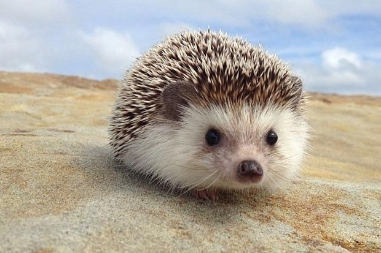
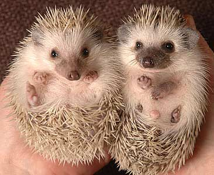

Aren't hedgehogs great!
Wild hedgehogs have been living in Africa forever but only in recent years have they been kept as pets. Most North American pet hedgehogs,typically called African pygmy hedgehogs,were bredfrom African species and are considered domesticated. These little animals can make terrific companions when housed and fed appropriately, and their popularity appears to be increasing.
Like porcupines, the skin over hedgehogs’ backs is covered with sharp spines that protect them from predators. Thankfully, unlike our native porcupines, hedgehogs cannot shoot their quills out in defense. When caught in the mouth of a predator, however, hedgehogs will twitch and jump so that their quills poke into the skin and lips of the aggressor, making things generally unpleasant until they are released. Handling a nervous hedgehog can be tricky for an owner, and you may need to hold your friend in a small towel until he relaxes.